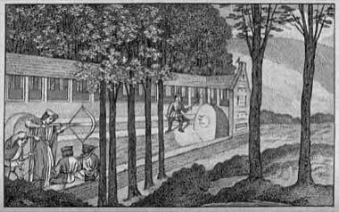

Home / Modern Heritage / Mediterranean
Encyclopedia ID 1367
Crossbow Target Match
Balestra sammarinese · balestra


Wind the crossbow, steady the sight against wind and wobble, and loose one bolt per round at a distant bullseye in a head-to-head match.
Heritage note
Part of the living heritage of Italy, San Marino. It is presented as sport and skill, never as real fighting.
Origins
Usually placed in the era of Modern Heritage (1800 to today), although its exact origins are uncertain, within the cultural world of Mediterranean.
Sources
Related entries

Gondola Rowing
Italy · Dexterity and skill games
Ring Tilting
Croatia · Dexterity and skill games
Chinlone
Myanmar · Dexterity and skill games
Pinata swing
Mexico +1 · Dexterity and skill games
Yukigassen Snow Fort
Japan · Water and winter sports
Bagatelle
France +1 · Dexterity and skill games